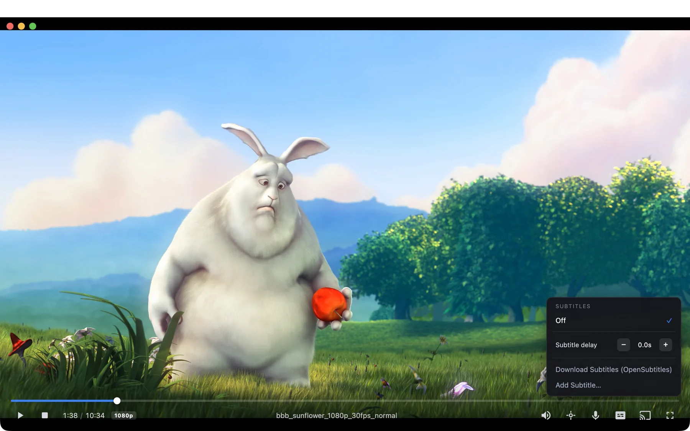

A Mac media player that gets your film onto the TV at the best quality the TV can take.
Spritz plays almost any video file on your Mac. When you send it to a TV, it checks what the file contains and what the TV can decode, then sends the original wherever it can and converts only the parts the TV can't handle.
Free, with no account. Needs an M1 or newer Mac. Intel Macs aren't supported.

How it decides what to send
Before anything is sent, Spritz reads the file and asks the TV what it supports. Converting video costs quality and battery, so it does that only when the TV leaves no other choice.
your video → Spritz reads the file → Spritz reads your TV → the best route it can use
(codec, HDR, audio, (what it decodes, send as-is · convert only
subtitles) how big, what audio) what has to change
It then tells you which of these happened, in these words:
Playing the original video and audio untouched.
The TV decodes everything in the file. Nothing is re-encoded.Playing the original video; only the audio is being converted.
For example, a 4K HEVC film with TrueHD sound on a TV that can't decode TrueHD. Surround stays surround.Converting the video for this device; audio is untouched.
For example, a 4K HDR film with AC3 sound sent over AirPlay, which tops out at 1080p SDR. The HDR is tone-mapped rather than flattened.
Four ways onto a TV
Your Mac and the TV need to be on the same network. Spritz picks the route per device, and the cast menu shows which one it chose.
| Route | Works with | What the TV receives | Change audio and subtitles |
|---|---|---|---|
| DLNA / UPnPbest for 4K HDR | Many LG, Samsung, Sony, Vizio, TCL and Philips TVs, and standalone renderers | The original file. 4K HEVC, HDR10 and HDR10+ arrive untouched. | With the TV remote |
| Google Cast | Chromecast dongles and TVs with Chromecast built in | Native 4K HEVC + HDR10 on capable TVs. H.264 on older 1080p dongles. | On the Mac. A change restarts the stream. |
| AirPlay 2 | Apple TV, AirPlay 2 TVs and receivers | H.264 SDR up to 1080p. AC3 and E-AC3 surround pass through. | On the Mac |
| Spritz Receiveroptional, LG webOS | LG webOS TVs in Developer Mode | The film from your Mac, played by a small app on the TV. | On the Mac or with the TV remote |
Dolby Vision is not passed through; DV films play as their HDR10 base layer. Spritz Receiver isn't in the LG Content Store and is installed as a developer app. How to install it.
Playing on the Mac
Spritz is built on libmpv, so it plays HEVC, AV1, VP9 and HDR files without codec packs. There's no library to import: drag a file onto the window, or use Open With from Finder.
Subtitles
Embedded tracks, sidecar files next to the video (Movie.en.srt or a Subs folder) and styled ASS. Image subtitles a TV can't draw are burned into the picture. Files without subtitles can use OpenSubtitles or generate them with Whisper.
Picks up where you left off
Continue Watching, playlists and queues, and remembered audio and subtitle languages for each title.
Keyboard
Space play and pause, ← → seek, ↑ ↓ volume, F full screen, , . frame step, Ctrl D diagnostics.
Where your media comes from
Local files and folders, network shares and external drives, direct media links, pages that yt-dlp can read, M3U and PLS playlists, and torrents or magnet links you supply. Spritz has no catalog or search of its own. See acceptable use.
What leaves your Mac
There's no account and no telemetry, and nothing is uploaded. Casting goes over your home network, never through the internet. Spritz contacts GitHub only when you choose Help → Check for Updates…, and it never checks or downloads anything on its own.
Features you start yourself, such as an OpenSubtitles search or a yt-dlp link, connect to those services when you use them.
Install
Download the .dmg
From the Releases page, which also lists SHA-256 checksums and the full source for each build.
Drag Spritz to Applications
Open the disk image and drag the app into your Applications folder.
Open it the first time
Builds aren't notarized by Apple, so macOS blocks the first launch. Use whichever of these fits your Mac:
Any macOS version. Run this in Terminal, then open Spritz as usual.xattr -dr com.apple.quarantine /Applications/Spritz.appmacOS 15 Sequoia and later. Try to open Spritz and dismiss the warning. Then go to System Settings → Privacy & Security and click Open Anyway next to Spritz.macOS 11 to 14. Right-click Spritz, choose Open, then Open again.
Prefer to build it yourself? Build from source.
Known limitations
Spritz is a release candidate, built and tested by one person on one Mac and one TV, an LG 55NANO80T6A. It works day to day. These are the rough edges most likely to affect you:
- Not notarizedmacOS asks you to approve the first launch. See Install above.
- AirPlay is 1080p4K and HDR are converted down. Use DLNA for 4K HDR.
- Dolby VisionNot passed through. Some strict DLNA TVs still reject 4K DV files.
- Google CastSeeking or switching tracks re-casts from the nearest keyframe and can rewind a few seconds. Only one Chromecast TV has been tested.
- Other TVsAnything other than the LG above is untested. Bug reports with your TV model help a lot.
The full list is in the README.
Support Spritz
Spritz is free and has no paid version. If it's useful to you, you can support its development through GitHub Sponsors. Bug reports, especially from TVs other than the one it's tested on, help just as much.